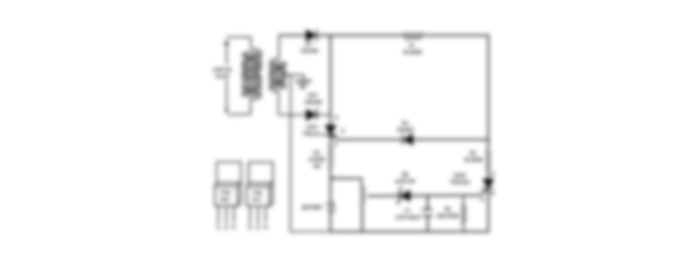

Pb Battery Charging System
This project was the implementation of the Power Electronics to make aa system for the charging of a 12 V Lead Acid Battery. The supply of 220 V was stepped downed to 24 V and 5 A which was retified using an half bridge retifier circuit which was made by using 1N5408 Power Diode. This was then passed to the thyristor TYN612 which was triggered using another diode 1N4007. Another Thyristor was used in order to carry of charge when the battery was completely charge This thyristor provided with the overcharge safety to the system along with the network of capacitors, resistors and zener diode.
Components required includes
1. 1N5408
2. 1N4007
3. TYN612
4. Resistor 6 Ohm (5W Rating)